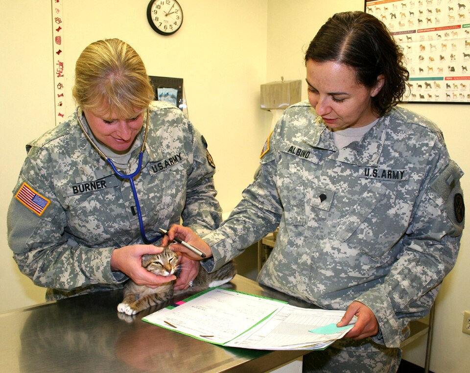

日常观察
六个维度，每天扫一眼
不用做复杂检查，健康幼猫和生病的幼猫，在下面六个方面差别很明显。建议固定在喂食、铲屎时各看一遍。
精神状态
健康幼猫醒着时好奇、爱玩、对逗猫棒有反应。如果整天趴着、叫不应、躲在角落，是第一信号。
食欲与饮水
突然不吃、只吃几口、或饮水明显增多/减少，都要记录。幼猫拒食超过 24 小时就有风险。
体温
幼猫正常肛温约 38.0～39.2℃。耳朵、肉垫发凉或明显发烫，配合精神差，就要考虑发热或低体温。
呼吸
安静时呼吸应平稳、无声。张嘴呼吸、腹部起伏明显、呼吸次数加快，都是急症信号。
排泄
看猫砂盆：软便、水样便、带血、频繁蹲厕却排不出、尿量骤减，都需要记录次数与形状。
眼鼻与皮肤
眼屎增多、结膜红、鼻涕、打喷嚏；皮肤出现圆形脱毛、皮屑、结痂，或频繁抓耳甩头。
自查清单
出现这些情况，今天就要处理
下列任意一条成立，都建议当天联系兽医；两条以上同时出现，直接就医，不要再等。
- 持续呕吐或腹泻：24 小时内呕吐 ≥3 次，或腹泻呈水样、带血、带黏液。
- 拒食超过 24 小时，或饮水量明显减少；幼猫尤其危险。
- 精神沉郁：叫不应、不躲不跑、对玩具无反应，或一直缩成一团。
- 呼吸异常：张嘴呼吸、呼吸急促、发出呼噜以外的杂音。
- 体温异常：明显发烫（耳根、腹部）或四肢冰凉。
- 眼鼻分泌物：脓性鼻涕、眼睑粘连、结膜明显红肿。
- 抽搐、站不稳、牙龈发白：提示低血糖或严重脱水，属于急症。
- 腹部明显膨大或触摸时抗拒、惨叫。
家庭初步干预
在去医院之前，先把这五件事做对
家庭处理的目标不是“治好”，而是稳定状态、避免加重、为就诊争取时间。做错往往比不做更糟。
1
立即隔离
把病猫单独放进一个安静、温暖、易消毒的房间，使用独立的猫砂盆、食盆和水碗。多猫家庭尤其重要，猫瘟、猫鼻支、猫癣都有传染性。
2
保温，而不是捂热
幼猫体温调节能力差。用毛毯、暖水袋（外包毛巾，避免烫伤）维持环境温度约 26～28℃，不要用电热毯直烤，也不要洗完澡后吹冷风。
3
少量多次补液
呕吐腹泻会快速脱水。可使用宠物口服补液盐，用针管从嘴角慢慢喂，每次 1～2 mL，间隔十几分钟。不要一次灌一大口，容易呛入气管。
4
记录，而不是凭感觉
记下呕吐/腹泻的次数与性状、进食量、饮水量、体温、精神状态，最好拍下粪便和分泌物的照片。这些信息对医生判断非常有价值。
5
尽快联系医院
先打电话说明情况，问清是否需要禁食、是否需要带粪便样本。能当天就诊就不要拖到第二天。

带上这些信息去就诊
- 疫苗与驱虫记录（时间、品牌、剂量）
- 最近的进食、排便、呕吐情况
- 粪便/呕吐物照片或样本
- 是否接触过其他猫、是否外出
- 家中是否使用过药物（名称与剂量）
这些事不要做：不要自行喂人用退烧药、止泻药、抗生素（对乙酰氨基酚、布洛芬对猫有致命毒性）；不要强行灌食灌水；不要给幼猫洗澡“降温”；不要因为“再观察一晚”而错过时间窗。
红旗信号
出现以下任一情况，立即就医
呼吸系统：张嘴呼吸、呼吸急促、嘴唇/舌头发紫、持续咳嗽。
神经系统：抽搐、转圈、站立不稳、意识模糊。
循环系统：牙龈苍白、四肢冰凉、皮肤回弹慢（捏起背部皮肤不能马上恢复）。
消化系统：呕吐物带血、剧烈腹痛、腹部明显膨大。
关于“观察一晚”：对成年猫可能成立，对幼猫常常不成立。幼猫从“有点蔫”到“严重脱水”可能只需要半天。拿不准的时候，宁可多跑一趟医院。